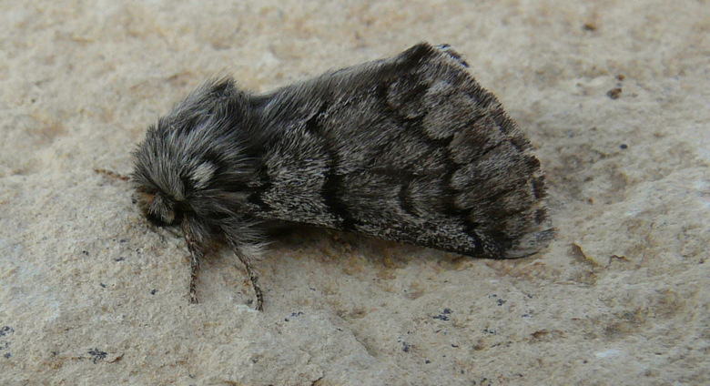
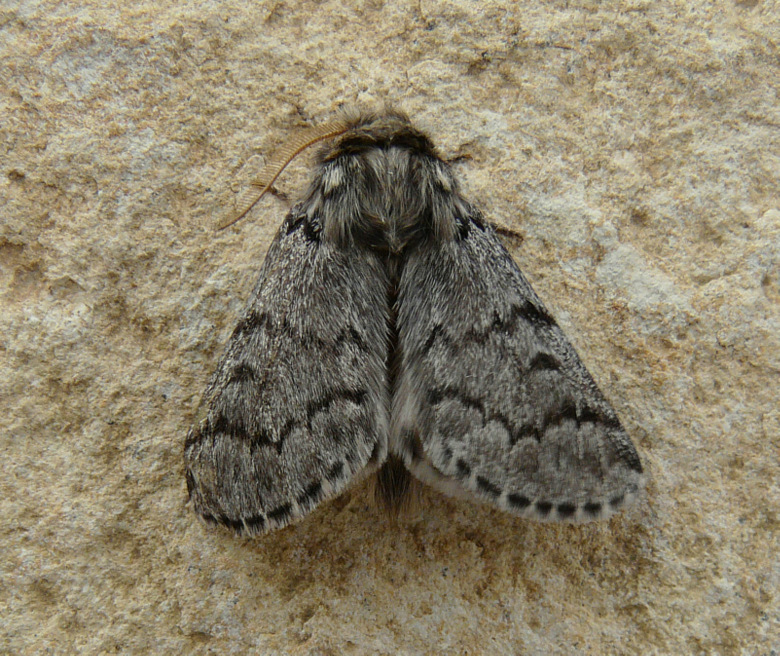
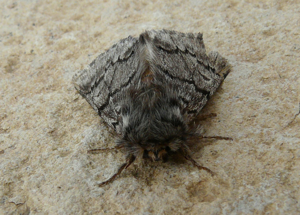
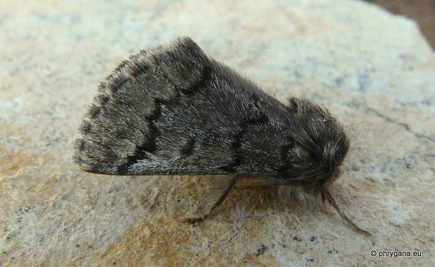

| PHRYGANA | Fauna | Flora |
additions nouveautés |
espèces species |
contact -
info - commentaires phrygana1 (at) gmail.com |
| Particularités crétoises | Galles et mines |
| Thaumetopoea pityocampa (Denis & Schiffermuller 1775) |
| 80 | Fauna | NOTODONTIDAE | Thaumetopoeinae | Thaumetopoea Hubner 1820 |
 Thaumetopoea pityocampa Melambes (Agios Giorgos) 15 septembre 2009 |
| en: Pine processionnary -- fr: la Processionnaire du pin -- de: Pinien-Prozessionsspinner | |
| Envergure: 32 - 34 mm pour le mâle, 36 - 40 pour la femelle. | |
| Aile antérieure grise avec deux transversales noires plus ou moins bien marquées. Présence d'une virgule bien marquée dans le milieu de l'aile antérieure. | |
| Les antennes du mâle sont brun roux. | |
| Chenille: monophage, elle se nourrit des aiguilles de diverses espèces de Pinus. | |
| Grégaires, les chenilles tissent de gros nids soyeux dans les branches de pin, nids dans lesquels elles passent l'hiver. Elles se déplacent en longues processions. | |
| Chrysalide dans la litière. | |
| Espèce univoltine. | |
| Période de vol: juillet août septembre | |
| Statut en Crète: indigène -- native | |
| Biotopes en Crète: parcs, forêts claires. | |
| Distribution: Europe (surtout centrale et méridionale). | |
|
Note:
Thaumetopoea pityocampa est un ravageur des pins. |
|
| Note: Le contact avec les chenilles peut causer de graves allergies. | |
| Vient à la lumière, surtout les mâles. | |
|
 Thaumetopoea pityocampa Melambes (Agios Giorgos) 15 septembre 2009 |
|
 Thaumetopoea pityocampa Melambes (Agios Giorgos) 15 septembre 2009 |
|  |
| 20 novembre 2011 |
| © paul fontaine -- © Phrygana.eu 2007 -- 2013 |